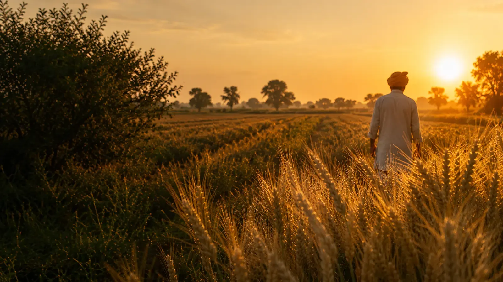
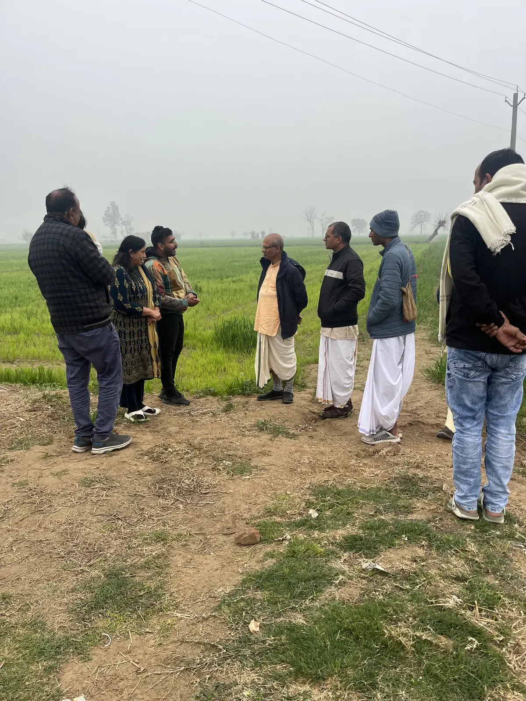

There was a time when food in India knew where it came from.
It came from a specific soil. A specific season. A specific hand.
Punjab had its grain. The Himalayas had theirs. The Deccan had another rhythm entirely.
Food was not produced.
It was grown.
The Green Revolution arrived in the 1960s.
It was necessary. It was urgent. It saved lives.
India was staring at famine. The country needed food — fast, and at scale.
The scientists and policymakers who drove that transformation deserve enormous credit.
But revolutions have consequences.
And this one had a quiet one that took decades to notice.

India once had thousands of native seed varieties.
Each one adapted — over centuries — to its local soil, rainfall and climate.
They were not engineered. They were evolved.
Then, in a single generation, most of them disappeared.
Replaced by uniform high-yield hybrids. Supported by chemical fertilizers. Dependent on pesticides season after season.
Agriculture became an industry.
And like every industry, it optimised for one thing.
Output.
Diversity — built over thousands of years — quietly vanished from India's fields.
For thousands of years, Indian farmers understood something modern agriculture forgot.
Soil is alive.
Natural farming practitioners describe healthy soil as a living ecosystem — filled with microbial activity, biological intelligence and self-restoring fertility.
But decades of chemical dependency changed this relationship.
The land became dependent.
And slowly, so did the farmer.
Modern systems measure food in yield per hectare.
But India's ancient food systems measured it differently.
Food was seasonal. Food was local. Food was connected to the body it was feeding.
Something has shifted in the last few decades.
Many Indian families quietly sense it.
People disagree on the exact reasons. Scientists are still studying the full picture.
But the question itself has become impossible to ignore.
What happens to food when farming becomes purely industrial for decades?
Across India, something important is stirring.
Farmers are returning to natural methods. Consumers are asking where their food comes from.
A quiet but deeply real movement is rebuilding itself — from the soil up.
Padma Shri Dr. Subhash Palekar has spent decades teaching natural farming as a living, working system that restores soil health and reduces chemical dependency.
The core idea is almost disarmingly simple.
Nature already knows how to create balance. Stop fighting it.
Prime Minister Narendra Modi has repeatedly encouraged reducing dependency on chemical fertilizers and supporting natural farming practices.
Part of the reason is ecological. India's soil and water systems are under visible stress.
But part of it is also economic.
India imports massive quantities of fertilizers every year — creating pressure on national expenditure and foreign exchange reserves.
Reducing unnecessary chemical dependency is no longer just a farming conversation.
It is becoming a national one.
Sattvakart was born from a simple belief:
Real food can quietly change everything.
Inspired by the vision and encouragement of Dr. Laxmidhar Behera, Director of IIT Mandi, we began asking deeper questions about food, soil and the future of Indian farming.
Not a business built on trends. Not a brand chasing markets.
But a small step toward more conscious food systems.
What kind of food should a civilization eat?
Food engineered purely for scale?
Or food grown with balance — with soil, with season and with the human body in mind?
Modern science is extraordinary. It should not be abandoned.
But real progress also means remembering what should never have been forgotten.
Because food is not fuel.
What we eat quietly becomes us.
And the future of farming eventually becomes the future of everything.
Fresh stone-ground flour. Naturally grown grains. Direct from our farms.
Explore Products